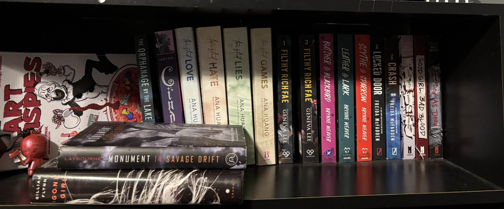
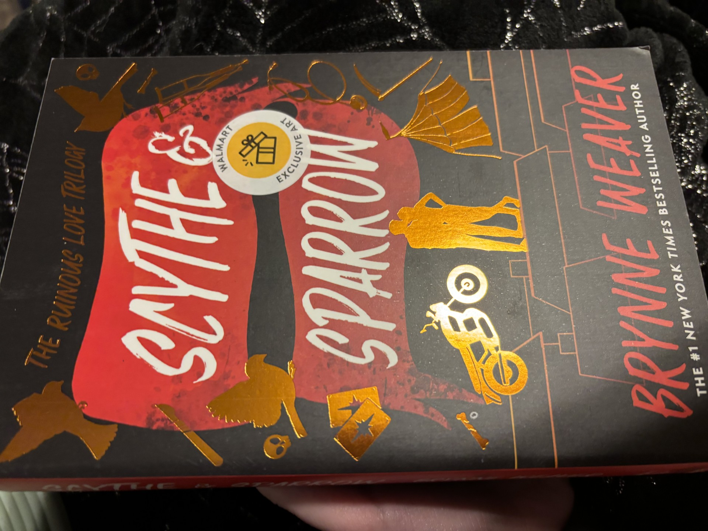
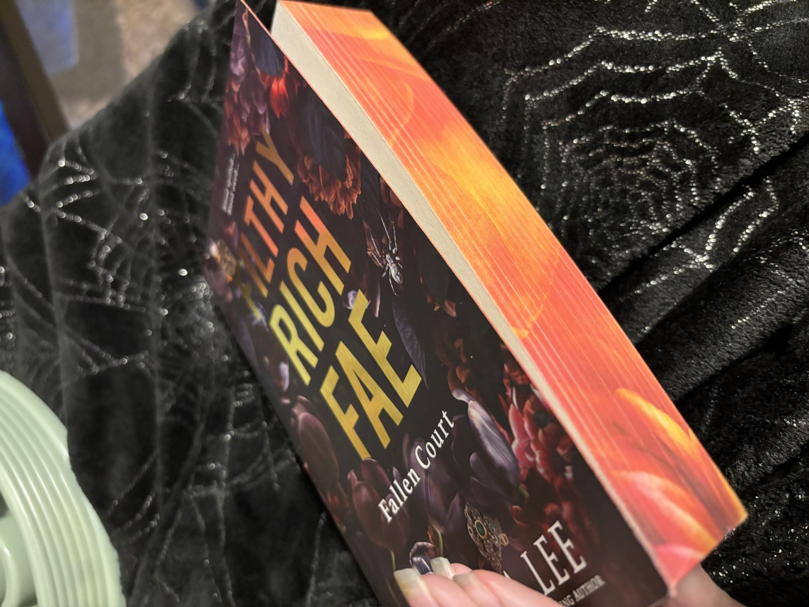

My Books
My physical bookself does not hold all of the books I have read, and I have also not read all of the books on my shelf. I have a bad habit of liking the first book of a series, buying the rest, and not reading them because I start reading something else. Nonetheless, all of my books I cherish, even if I haven't read the first book of the series (buying a series because a friend said it is good has happened at least once)

Pretty Books
"Pretty" books are just that, pretty. They can have sprayed edges or a special cover different from other prints. However, they may cost slightly more, but sprayed edges on books makes my heart happy, so, worth it.
